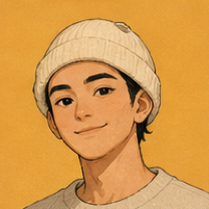
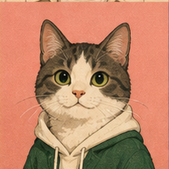
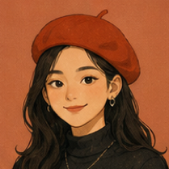
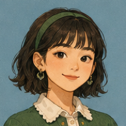

 峡谷小蛋LV9 海边的光真好看。下次把风也录下来，应该会是一条很舒服的语音。 查看 2 条回复 ›  楠暮LV8而且今天的云层很低，现场应该更漂亮。 ♡3 王者传呼机LV18楠暮已加入下一次散步清单。 ♡1 ♡12

海边的光真好看。下次把风也录下来，应该会是一条很舒服的语音。

而且今天的云层很低，现场应该更漂亮。
已加入下一次散步清单。

“认真生活过了”这句话我很喜欢。照片里的蓝也很安静。
那就把这句话也送给今天的你。

先收藏这个位置，等天气再凉一点就去。